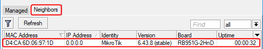
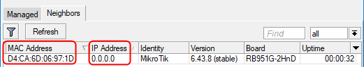
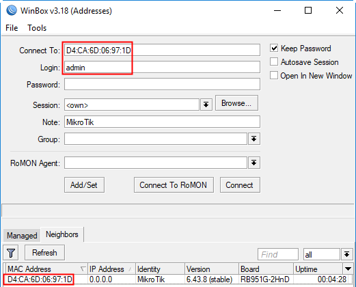

Untuk dapat mengakses Mikrotik, Anda harus melengkapi
3 parameter yang terdapat pada kotak dialog login dari aplikasi winbox yaitu:
- Connect to (digunakan untuk memasukan alamat IP atau alamat
MAC
dari router Mikrotik yang akan diakses).
- Login (nama login pengguna yang digunakan untuk mengakses
router Mikrotik), dan
- Password (sandi login pengguna yang digunakan untuk mengakses
router mikrotik).
Secara default Mikrotik telah membuat satu user untuk tujuan administrasi yaitu dengan nama
login "admin" dengan password kosong (tanpa sandi).
input Connect to dapat diisi secara otomatis melalui
pemanfaatan Mikrotik Neighbor Discovery Protocol (MNDP) yang dapat mendeteksi router Mikrotik
yang terhubung secara langsung dengan komputer yang digunakan yaitu dengan cara memilih tab Neighbors
di bagian bawah dari Winbox, seperti terlihat pada gambar berikut:

Terdeteksi satu router Mikrotik
RB951Ui-2HnD. Apabila belum terdeteksi atau terlihat informasi daftar router Mikrotik maka klik tombol
Refresh.
Dari daftar router yang ditemukan, pilih isian kolom MAC Address atau
IP untuk tekoneksi ke router Mikrotik tersebut, seperti terlihat pada gambar berikut:

karena Mikrotik belum memiliki alamat IP maka Pilih alamat MAC yang tampil, dan lengkapi parameter
Login dengan isian "admin", seperti terlihat pada gambar berikut:

Selanjutnya tekan tombol "Connect" untuk menghubungkan ke router Mikrotik.